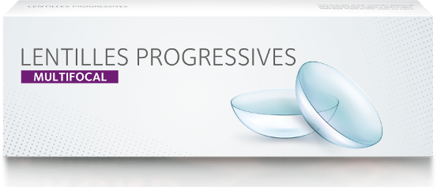

Bravo,
vous avez terminé le quiz !
La presbytie est un phénomène normal qui apparaît vers 40 ans et qui touche tout le monde.
Avec l’âge votre cristallin perd de sa souplesse et la mise au point en vision de près ne se fait plus parfaitement. La presbytie évolue avant de se stabiliser autour de 60 ans
Votre ophtalmologiste saura vous orienter vers la solution adaptée à vos besoins : lunettes de vue, lentilles de contact, chirurgie.
65% des 40-65 ans ignorent que les lentilles de contact multifocales existent pour corriger la presbytie2, alors qu’elles peuvent offrir un haut niveau de confort et une vision nette à toutes les distances.
Les lentilles multifocales permettent d’apporter des corrections pour votre vision de près, de loin et intermédiaire, qui sont toutes intégrées dans le design de la lentille. Les images sont envoyées au cerveau qui s’occupe du reste !
Les lentilles de contact peuvent aussi être envisagées pour leur praticité3 ou leur sens esthétique*4 : elles offrent liberté de mouvement pour la plupart des activités et sont un bon moyen de ne pas afficher votre défaut visuel !
Parlez-en à votre professionnel de la vue, il saura vous conseiller.
PROFITEZ DE VOTRE ABONNEMENT au magazine de votre choix† !
*91% complètement/assez d’accord. †Selon une liste pré-définie. 1. https://www.gatinel.com/chirurgie-refractive/presbytie-2/ Date de dernière consultation : 13/09/2023. 2. Données internes CVI, 2021. Sondage presbytie, n=3257, consommateurs âgés de 40 à 65 ans, Verve, Décembre 2020. 3. Données internes CVI, 2020. Sondage consommateur en ligne YouGov Plc, en Octobre 2020. Taille de l’échantillon total : 8203 adultes âgés de 18 ans et plus aux Etats-Unis, au Japon, au Royaume-Uni, en Italie, en Suède, au Canada, aux Pays Bas et en Australie qui portent des lunettes et des lentilles de contact (n=4,064). 4. Données internes CVI, 2020. Sondage consommateur en ligne YouGov Plc, en Nov/Dec 2019 en Allemagne, au Royaume-Uni, en Espagne, au Japon, aux Etats-Unis. N=5347 porteurs de lentilles de contacts sélectionnés parmi un total de n=35397 adultes. Données pondérées et représentatives des adultes de chaque marché (âgés de 18 ans et plus).
Décharge de responsabilité : le quiz n’est pas destiné à remplacer une consultation d’ophtalmologiste et ne constitue pas un avis médical.
Le port de lentilles de contact est possible sous réserve de non-contre-indication médicale au port de lentilles et soumis à une prescription médicale. Dispositifs médicaux, marqués CE, consultez les notices et les étiquetages spécifiques à chacun pour plus d’informations. En cas de doute, demandez conseil à votre ophtalmologiste ou votre opticien. COOPERVISION SAS au capital de 71 712€ dont le siège social est situé Immeuble Les 2 Arcs bât B - 1800 Route des Crêtes B.P. 273 - 06905 Sophia Antipolis Cedex, France et immatriculée au RCS de Grasse sous le n°39200221800049. Septembre 2023. COO-0123-010.